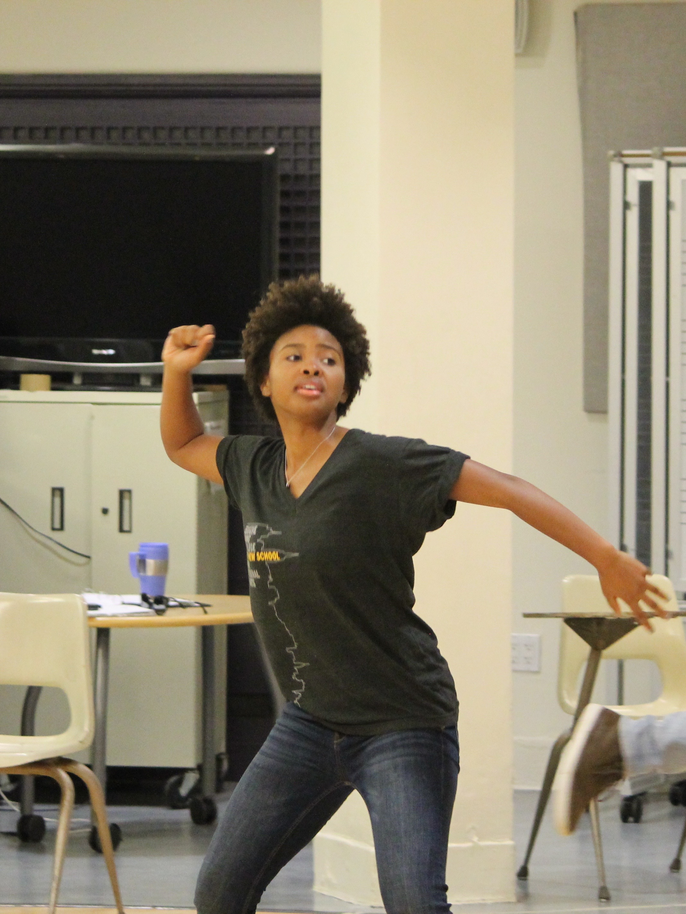
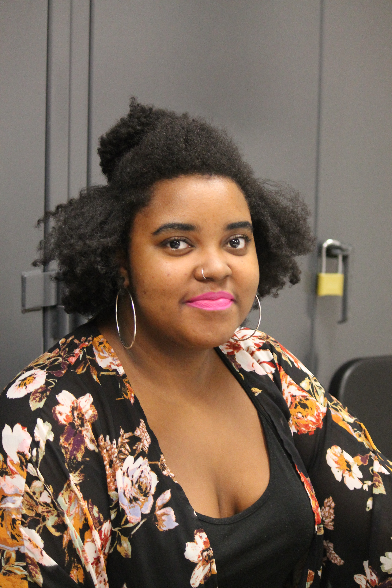

It is 10 am on a Saturday, final rehearsals have just begun for “If We Don’t Get It, Shut It Down,” a play about the Baltimore uprising set to premiere on April 22. The full cast isn’t present as rehearsal begins, but by the end of the run through they all trickle in. There are no warm ups; they walk in at different points in the play and immediately, they snap into their characters.
“No Justice, No Peace, No Racist Police!” the cast shouts as writer and director, Lang senior Morgan Stevenson, looks on. She takes notes on their performance, critiques one of the actors, pushing them to give it their all in these final rehearsals before the first show.
“It’s been a really interesting creative process,” Stevenson said. “We’ve been rehearsing this play since January so we are in like our third month now. It’s been insane.”
.jpg)
“If We Don’t Get It, Shut it Down,” is a response to the events that unfolded last year in Stevenson’s hometown of Baltimore, Maryland relating to the death of unarmed black man Freddie Gray. Gray was taken into police custody for allegedly having an illegal switchblade. While being transported in a police van, Gray lost consciousness and was transported to a nearby hospital where he died a week later from spinal cord injuries. What followed was a mass uprising in Baltimore that Stevenson said, was misrepresented by the media.
“Because I was unable to go back home because of commitments to school and other activities and work that I was involved in at the time, I had to completely rely on what I was watching on TV when I couldn’t get into contact with my family and my friends in Baltimore,” Stevenson said. “I found that when I was able to get into contact with them, a lot of what they had to say about the events was drastically different from way the events were depicted on CNN or Fox News.”
Stevenson said the media was portraying the violence without giving context as to why people were so outraged.
“These are people who had just experienced so much trauma on so many levels that a lot of people can’t understand,” Stevenson said. “After years and centuries and generations of this problem of police brutality they finally showed their outrage so that’s what you saw on TV. The news did not take time to explain why this situation had happened. We all know about Freddie Gray, we know what happened to him, but we don’t know about the other Freddie Gray’s that happened before Freddie Gray. We weren’t getting told about the housing conditions in Baltimore, the poverty.”
"We all know about Freddie Gray, we know what happened to him, but we don’t know about the other Freddie Gray’s that happened before Freddie Gray."
One of the other reasons Stevenson said she wanted to write a play had to do with her own experiences with police brutality. She said she wanted to use her privilege of being a college student and privilege of being able to practice her art to amplify the voices of the people who needed a voice. The voices she decided to focus on were the youth of Baltimore.
“I feel like that was the one demographic that was the most heavily defamed by the media,” Stevenson said. “The play consists entirely on interviews from them…about their reflections during that time period and also asking them what they believe was the cause of this uprising that we saw that happened last year.”
For the play, Stevenson interviewed twelve people mainly from her former high school, the Gilmor Housing Projects where Gray was arrested, and also people who did not have an active role in the protests.
“I thought it would be really important to have that contrast because there are a lot of people who can’t be out in the streets everyday and due to my commitments and everything I hadn’t been able to be as active as I once was in the past so it’s important to have that perspective as well because everyone has a different role in this movement,” Stevenson said.
Stevenson handpicked the actors for her play who consisted of former and current New School students and colleagues. In order to make the cast have a better connection with the message of the play and stories behind their characters, Stevenson arranged a cast trip to Baltimore.
“It was a phenomenal experience,” Lang senior and actor Michael Vargas said. “You know we actually got to see the landscape, get to actually get to meet the people she interviewed and who we were playing, which was great. And we also went to Freddie Gray’s neighborhood, which made it really personal. We saw the way people were living over there and the disparity and the difference between that area and like Raven stadium and the harbor area. It really contextualized a lot. It wasn’t a detached thing anymore; it became more personal, more sentimental.
The play will makes it debut this weekend, April 22 and 23, at the Harlem Repertory Theatre, but Stevenson said this is a project she plans on completing and working on for the next couple of years.
“For those of you who will attend, you can see that it’s not finished,” Stevenson said. “When I present it, it’s going to be the one year anniversary of Freddie Gray’s death…my next move is to update my interviews and talk to all of my subjects again, asking them about where they are right now cause when I conducted these interviews it was months ago so a lot of things have changed since then.”
She also has plans to hold a special production of the piece after she graduates.
“I’m hoping to have a staged reading of it in Baltimore this summer having the interview subjects perform the piece,” Stevenson said. “It’s important for me to bring the performance there because those are the people who inspired it the most.”
“If We Don’t Get It, Shut it Down,” is playing a two night run April 22nd to April 23rd at the Harlem Repertory Theater. Admission is free.